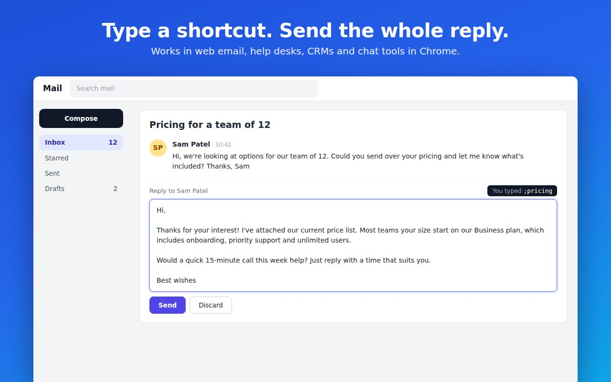
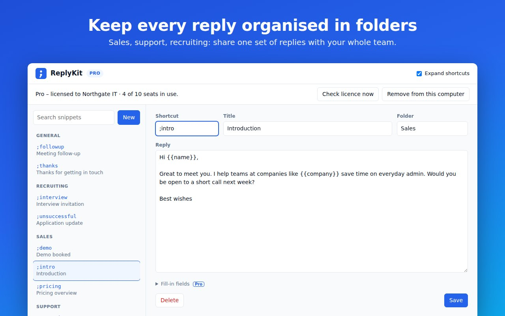

ReplyKit
A Chrome extension that started life as my ServiceDesk Toolkit. On the service desk I was typing the same updates, unlock confirmations and escalation notes dozens of times a day, so I built a tool that turns a short shortcut like ;thanks into the full reply — in any web-based ticketing system, inbox or chat tool.

;unlock asks for the name and ticket number, then writes the whole “account unlocked” reply into the ticket.The problem
A 1st line service desk sends the same handful of messages all day: “we’ve logged your ticket”, “your account is unlocked”, “this has been escalated to the network team”. Typing them by hand is slow and inconsistent, and copy-pasting from a notes file means leaving the ticket and fixing names and reference numbers afterwards.
I wanted something that works inside whatever web tool the team already uses, keeps replies consistent across a team, and never sends customer text anywhere.
What I built
- Shortcut expansion in any text box: type
;thanks,;unlockor;escalateand the shortcut is replaced with the saved reply as soon as it is fully typed. - Fill-in fields:
{{name}},{{ticket number}}or any custom field prompts for a value on expansion;{{date}},{{time}}and{{cursor}}fill themselves in. - Snippet manager: search, folders, import/export and a shared team file so a whole desk works from one set of replies.
- Toolbar popup: search replies and click to copy, or switch expansion off instantly.
- Free and Pro plans: licence keys with per-seat limits sold through Lemon Squeezy, which handles payment and UK VAT.
- Product website: home, pricing, privacy policy, terms and post-purchase activation pages.

;pricing in a web mail reply box expands into the full saved message. Ctrl+Z undoes it.How it works
- Pure, testable core: shortcut matching, validation, plan limits, field filling and import/export live in one module with no DOM or
chrome.*calls, so it is unit-tested under Node. - Plays nicely with real web apps: the content script replaces text through
insertText, which keeps Ctrl+Z working and lets React-based ticketing tools notice the change, with a fallback for pages that refuse the command. - No ambiguous shortcuts: because expansion is instant, one shortcut can’t be the prefix of another (
;pwvs;pwreset); the editor and importer reject those clashes up front. - Private by design: snippets stay in
chrome.storage.localand are never synced or uploaded. Only the few characters before the caret are read, and password fields are ignored. - Licensing that can’t be switched on from DevTools: a background service worker is the only networked code. It activates and re-checks keys with Lemon Squeezy, accepts only keys for this store and product, and turns Pro back off if it was enabled any other way — with a 14-day offline grace period.
- Nothing is lost on downgrade: if a licence lapses the oldest ten snippets keep working and the rest are paused, not deleted.
Architecture

Verification
Unit tests cover the core logic under Node’s built-in test runner. Two Playwright suites load the unpacked extension into Chromium: one types into real textareas, inputs and rich-text editors and checks expansion, undo, password-field skipping and fill-in fields; the other runs the full licence lifecycle — unknown keys, full seats, activation, expiry, renewal without using a second seat, offline errors and freeing a seat — against a fake Lemon Squeezy server, and asserts that snippet text is never sent to it. Store screenshots are regenerated from the real UI with a script.
What this demonstrates
ReplyKit is where my two jobs meet: it came from a real frustration on the service desk, and I took it all the way to a product — browser APIs, careful handling of other people’s web apps, privacy decisions, a payment and licensing model, automated tests and a public website. It also shows I can take a tool built for one team and generalise it for support, sales and recruiting teams without losing the original use case.